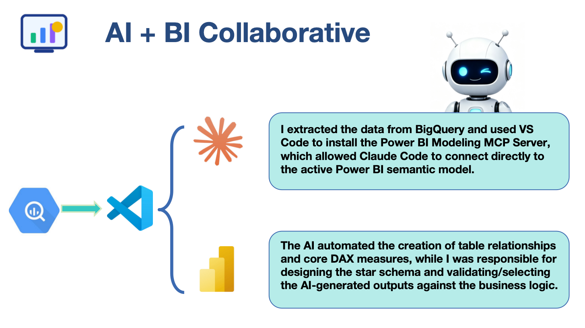
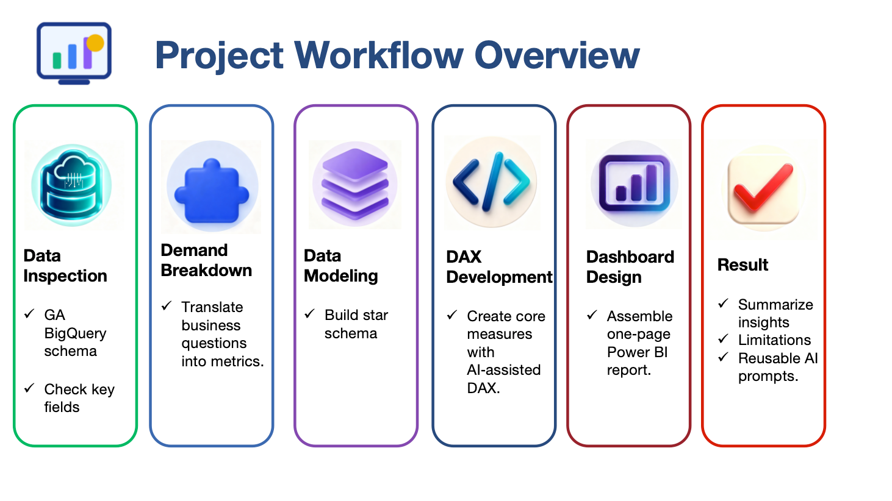
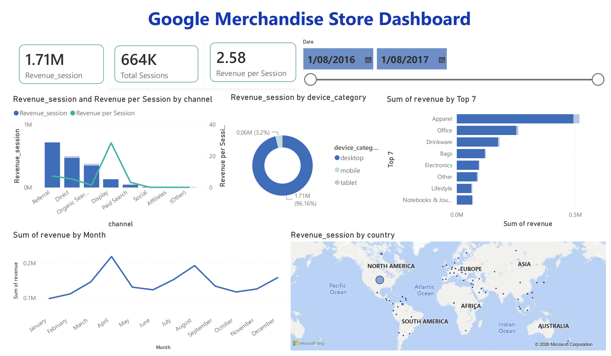

1. Project Workflow
1.1 Data Exploration (BigQuery + SQL)
The project began with exploring the Google Analytics BigQuery export schema. To efficiently understand the nested data structure, I used Google's official schema documentation together with AI-assisted interpretation.
Using UNNEST, I explored the relationships between session-level and product-level data and assessed data quality before building the dashboard.
Key findings:
- Identified the three-level nested structure: session → hits → product
- Compared revenue calculated at different granularities and found an approximately 2.1% difference between session-level and product-level revenue — consistent with expected GA reporting behaviour
- Discovered that product categories were not always associated with every transaction
A clear understanding of the dataset structure, reporting granularity, and known data limitations was established before moving into dashboard design.
1.2 Business Requirements → Dashboard Design
Rather than building visualisations first, I translated the business objective into analytical questions.
Build a revenue-focused dashboard that enables users to analyse sales performance over time and identify where revenue is generated.
The dashboard was designed to answer four business questions:
- Which acquisition channels generate the most revenue?
- Which customer devices contribute most to revenue?
- Which countries drive business performance?
- Which product categories create the highest commercial value?
Each question was mapped to appropriate KPIs, dimensions and visualisations before any Power BI development began.
1.3 Data Modelling & DAX Development
To support interactive analysis while keeping the model simple, I designed a lightweight star schema.
The semantic model consists of:
- Two fact tables
- Session-level revenue
- Product-level revenue
- Shared dimension tables
- Date
- Channel
- Device
- Country
- Product Category
This structure allows every visual to interact consistently through shared dimensions, enabling seamless cross-filtering across the report.
Core measures were then implemented in DAX:
1.4 Dashboard Development & Business Insights
The final Power BI dashboard provides a single-page overview of revenue performance, including:
- Date slicer — flexible time range selection
- Revenue KPI — total revenue at a glance
- Revenue trend — daily performance over time
- Revenue by Channel — acquisition channel breakdown
- Revenue by Device — desktop vs mobile vs tablet
- Revenue by Country — geographic distribution
- Revenue by Product Category — product-level performance
Key Business Insights
Referral generates the largest share of total revenue, while Display delivers substantially higher revenue per session. This suggests that future marketing investment could focus more on attracting higher-value traffic rather than simply increasing traffic volume.
Approximately 96% of revenue currently comes from Desktop devices. However, Paid Search performs relatively well on Mobile and Tablet, suggesting further growth may be achieved by improving the mobile purchasing experience.
The United States contributes approximately 93% of total revenue, making it the primary commercial market. While this reflects strong domestic performance, it also indicates limited geographic diversification and potential concentration risk.
Apparel remains the dominant revenue category. Meanwhile, everyday product categories such as Office and Drinkware represent relatively small revenue shares, indicating opportunities for bundle promotions or themed collections to diversify sales.
1.5 Quality Assurance
To validate reporting accuracy, total revenue was independently recalculated in BigQuery using SQL and compared against Power BI. This verification confirmed that the dashboard contains neither duplicate counting nor missing revenue records.
2. AI Collaboration (Power BI MCP)
AI was used throughout the project as a productivity assistant rather than a decision maker. The Power BI Modeling MCP Server enabled AI to inspect the semantic model of the open report and assist with model development.
AI supported three areas:
- Understanding complex schema structures
- Generating candidate DAX measures and modelling suggestions
- Producing model documentation for version control
Prerequisites
- Keep the report open so AI can connect to the current model
- Define clear natural-language prompts with context and constraints
- Review all AI-generated code for correctness — AI is a copilot, not the pilot